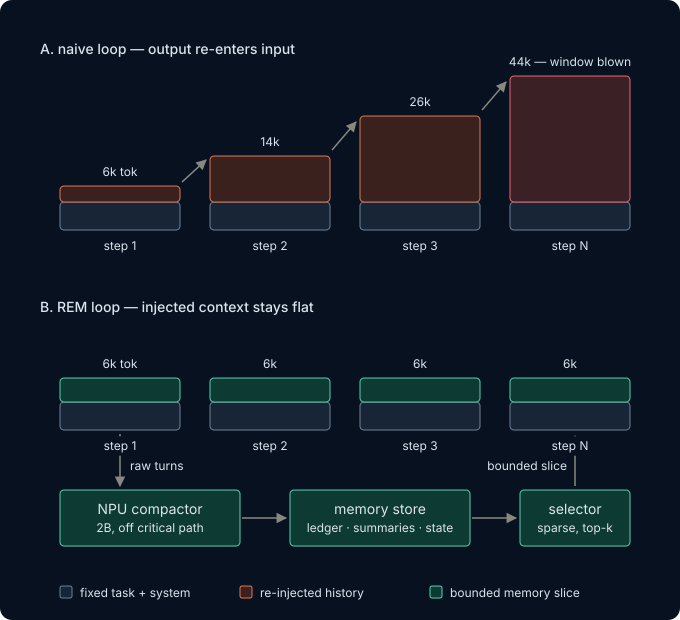

Brain
The model chooses
It reads what is on its desk and decides the next action. It does not need every raw page it has ever seen.
The model is the brain, REM is the notebook, and the environment is the world. REM keeps the notes on the brain's desk useful and bounded as the job gets longer.
The core idea
A naive loop appends every observation and answer to the next prompt, so context compounds until the model's window blows. REM files bulky history outside the model and returns a bounded slice of relevant state each step.
It reads what is on its desk and decides the next action. It does not need every raw page it has ever seen.
It compacts bulky history, keeps load-bearing facts, and selects a fit-to-budget view for the next step.
It returns files or tool results, accepts actions, tracks state, and knows how to score the task.

The placement question
Concurrent NPU compaction cost ~3.8% iGPU decode versus ~4.8% for the CPU control, across 3 runs × N=20. This is a measured contention budget, not a contention-free claim.
~3.8% iGPU decode loss.
~4.8% iGPU decode loss.
The keep-up question
The committed probe drains at ~73 tok/s while the example transcript grows at ~30 tok/s: a ~2.5× keep-up margin.
RSB-3 prompt size fell 47.6%, from 27,386 to 14,341 tokens. Prefill moved from 34.16 s to 0.12 s; after a 30.27 s re-prefill tax, net savings were +3.77 s.
Naive assembly overflowed at 37k–58k tokens against a ~32–40k window, producing context_overflow 0/5.
The sustained-load question
The repository retains its committed sustained-load artifacts and methodology. This concept refresh does not restate figures outside the dispatch brief's sanctioned set.
Inspect methodology & artifactsHow it works
The sidecar preserves recent text, compacts older material, and assembles only what fits the next request's context budget.
Recent turns stay word-for-word.
Older spans become compact prose and a load-bearing facts ledger.
The next prompt receives a small, useful view rather than the whole store.
Honest status
REM's direction is now context budget over agent horizon. The agent-horizon harness is the next milestone, and no multiplier has been measured yet.
Replay identical long tasks through naive, truncate, and REM memory policies; record the budget line; then test a state-card handoff before a hard failure.
Read the harness charter